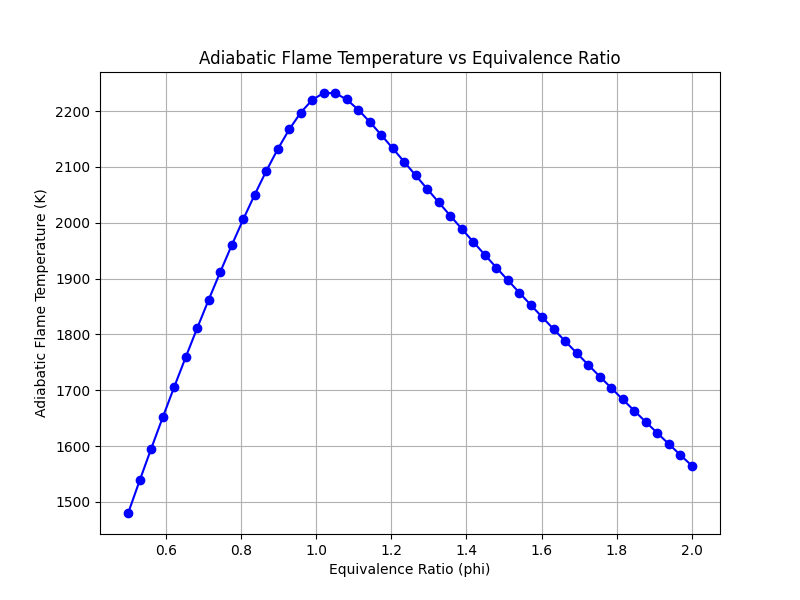

This document tracks the results and physical explanations for the Cantera exercises we run. Open this in any web browser to review your findings.
Script: cantera_01_equilibration.py
Mixture: Stoichiometric Methane-Air (Φ = 1.0)
Initial State: 300 K, 1 atm
When we burned a perfect stoichiometric mixture of Methane and Air at constant pressure and enthalpy, the temperature rose to 2225 K.
However, notice the minor products. Simple chemistry tells us that CH4 + Air only produces CO2, H2O, and N2. But at 2225 K, the thermal energy is so incredibly high that molecules begin to dissociate (break apart). For example, some CO2 breaks down into CO and O.
This dissociation process is endothermic (it absorbs heat). Because energy is "stolen" to break these molecular bonds, the final flame temperature is actually lower than what a simple, ideal mathematical energy balance would predict. Cantera figures this out automatically by minimizing the Gibbs free energy of the entire mixture to find the true chemical equilibrium.
Additionally, at these extreme temperatures, the usually inert Nitrogen (N2) in the air begins to react with Oxygen to form Nitric Oxide (NO), which is the primary source of NOx pollution in gas turbines and engines.
Script: cantera_02_parametric.py
Mixture: Methane-Air Sweep (Φ = 0.5 to 2.0)
Initial State: 300 K, 1 atm
The flame temperature peaks at roughly 2227 K, but noticeably, the peak does not occur at exactly Φ = 1.0. It peaks slightly on the rich side (around Φ = 1.05).

Intuitively, you might expect the hottest flame to occur at a perfectly stoichiometric ratio (Φ = 1.0), because there is exactly enough oxygen to burn all the fuel. Why does it peak slightly rich?
Because of dissociation. At Φ = 1.0, the temperatures are extremely high. The combustion products (like CO2 and H2O) begin to dissociate endothermically into CO, OH, H, and O. This dissociation process absorbs thermal energy, capping the peak temperature.
When the mixture is made slightly fuel-rich (Φ ~ 1.05), the lack of excess oxygen inherently suppresses the dissociation of CO2 into CO and O (due to Le Chatelier's principle and oxygen scarcity). Because less energy is "wasted" on dissociation, more of it remains as sensible thermal energy, driving the overall mixture temperature slightly higher than the stoichiometric case.
If you keep adding fuel past Φ ~ 1.05, the unburned fuel simply acts as a thermal mass (a heat sink), dropping the temperature rapidly on the rich side. On the lean side (Φ < 1.0), the excess oxygen and nitrogen act as heat sinks, dropping the temperature there as well.